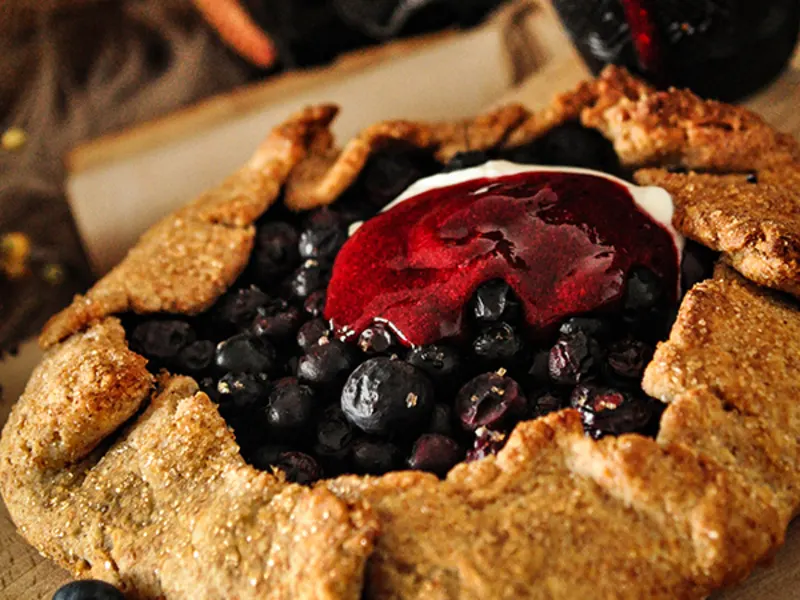

Jazbay Crostata

Description
Jazbay grapes are found on rocky terrain or near hot springs throughout Skyrim. Their rich flavour is so prized that in olden times, permission was required from the Emperor to pick them. While they are no longer banned to the common folk, gathering jazbay is tiresome as they are still rare. If you manage to get your hands on some though, this delicious crostata is perfect for regenerating your magicka (and it tastes amazing too)!
Ingredients:
- Pastry:
- 250g flour
- 124g butter, very cold and diced
- 25g caster sugar
- 2 large egg yolks
- 3 tbsp milk
- Pinch of salt
- Filling:
- 3 cups red seedless grapes
- ½ cup mascarpone cheese
- 1 tsp vanilla extract
- 3 tbsp sugar
- 1 tbsp heavy cream
- 1 tsp lemon juice
- 1 egg yolk
- Butter, for brushing
Steps:
- For the pastry, place the flour, butter, salt, and sugar into a food processor and blend until the consistency of breadcrumbs has been reached.
- Add the egg yolks and milk, then blend again until the dough forms.
- Turn the dough onto a floured surface and knead briefly, then wrap in cling film and chill for at least 30 minutes.
- Preheat your oven to 205C/400F.
- Roll out your pastry dough into a centimetre-thick circle with a slight well in the centre (think of a pizza) and set aside on a greased baking tray. Don’t worry if it’s not perfect!
- Combine the mascarpone, lemon juice, vanilla, cream, egg yolk, and sugar.
- Whip until fluffy and spoon into the well of the pastry. Brush the exposed pastry generously with butter.
- Top evenly with grapes and bake for 45-50 minutes. If the pastry browns too quickly, cover your crostata with tin foil for the remaining time.
- Enjoy!
Back to homepage